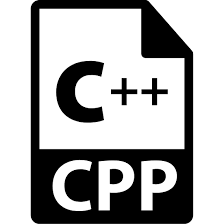

Rashi Chaubal
Aspiring Software Developer
Hi all! I am an undergraduate Computer Engineering student studying in zeal college of Engineering and Research. I have much of intrest in front end developments,designing,as well as mobile app development,have tried few of cross platform apps for mobile and I am always looking forward for bringing out more creativity in my work.
Beyond that i find my intrest i reading blogs ,articles related to topics around us Environmental,traveling etc.
My Skills
LANGUAGES KNOWN
 1.JAVA
1.JAVA  2.C
2.C -  3.C++
- 4.HTML
TECHNOLOGIES DATABASE AND TOOLS
- 1.CORDOVA
- 2.MySQL
- 3. GitHub
PROJECTS
Sports Playing Prediction System using Naive Bais
The System is developed for deciding whether there are favorable situations for conducting a particular game,by considering all history based on which predictions are made,to avoid losses. The System is useful for schools or colleges conducting matches for at a moderate level.
Smart Power Saving System
The system is IOT based which will smartly save electricity by switching off laptop and other connected devices to it,after a particular time period,if there is no human interfernce throughout a particular time
TRAININGS
ZENSAR ESD PROGRAM by Zensar Techonolgies 2020
APACHE CORDOVA by ATS FOUNDATION 2020EDUCATION
ZEAL COLLEGE OF ENGINEERING AND RESEARCH PUNE
Savitribai Phule Pune University
BE in Computer Engineering
2018 - present
ZEAL COLLEGE OF POLYTECHNIC PUNE
Maharashtra State Board of Technical Education
Diploma in Computer Engineering
2016 - 2018
YOU CAN FIND ME ON


Copyright © Rashi Chaubal 2020